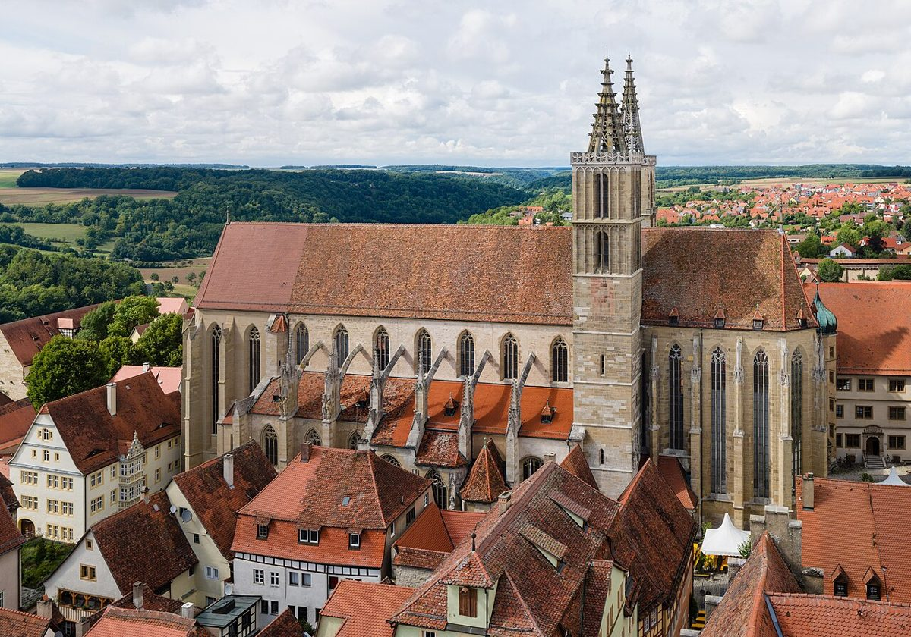

Rothenburg ob der Tauber: Märchenhaftes Mittelalter in Franken

Willkommen im Bilderbuch-Städtchen
Rothenburg ob der Tauber ist wie aus dem Mittelalter entsprungen. Die komplett erhaltene Altstadt mit ihren schiefen Fachwerkhäusern, verwinkelten Gassen und mächtigen Stadtmauern macht jeden Besuch zum Zeitreise-Erlebnis. Die fränkische Perle an der Romantischen Straße gehört zu den schönsten Städten Deutschlands – hier erfährst du, warum.
Anreise: So kommst du hin
Mit dem Auto: Über die A7 (Ausfahrt Rothenburg ob der Tauber), Parkhäuser gibt es am Stadtrand. Besser: Bahn bis zum Bahnhof Rothenburg (von Ansbach oder Steinach aus), dann 15 Minuten zu Fuß in die Altstadt. Busse fahren auch direkt vom Bahnhof ins Zentrum.
Beste Reisezeit: Wann lohnt es sich?
Frühling bis Herbst ist ideal, wenn die Blumen an den Häusern blühen und die Cafés im Freien sitzen. Besonders magisch: der Dezember mit dem berühmten Weihnachtsmarkt. Aber Achtung – dann ist es voll! Wer Ruhe will, kommt im Januar oder November.
Top 5 Highlights in Rothenburg
1. Spaziergang auf der Stadtmauer
Fast komplett begehbar! Der Rundweg bietet tolle Blicke auf die Dächer und ins Taubertal. Besonders schön: der Blick vom Markusturm.
2. Plönlein – das Postkartenmotiv
Das gelbe Fachwerkhaus an der Gabelung ist DAS Fotomotiv Rothenburgs. Am besten früh morgens oder spät abends, wenn die Touristenbusse weg sind.
3. Kriminalmuseum
Gruselig-spannend: Mittelalterliche Folterinstrumente und Rechtsgeschichte in einem alten Patrizierhaus. Nicht für zarte Gemüter!
4. St.-Jakobs-Kirche
Der gotische Bau birgt einen Schatz: den Heilig-Blut-Altar von Tilman Riemenschneider. Die Fenster leuchten bei Sonne wunderschön.
5. Nachtwächter-Führung
Ein „Nachtwächter“ in historischer Kluft erzählt bei einer abendlichen Tour gruselige und lustige Geschichten – sehr unterhaltsam!
Fränkische Spezialitäten: Was du essen solltest
• Schneeballen: Das knusprige Gebäck gibt’s in jeder Bäckerei (original ohne Schokolade!).
• Fränkischer Sauerbraten mit Kloß: Herzhaft und lecker, z.B. im „Altfränkischen“.
• Wein: Die Tauber-Region hat eigene Reben – probiere einen Silvaner!
• Bier: Rothenburg hat eine kleine Brauerei („Zur Höll“) mit dunklem Bier im mittelalterlichen Ambiente.
Extra-Tipp: Einfach mal verlaufen!
Rothenburgs Charme liegt in den kleinen Gassen abseits der Hauptstraße. Schlendere durch die Herrngasse, entdecke versteckte Höfe wie den Gerlachschmied oder das Spitalviertel mit seinem alten Tor. Jeder Winkel ist ein Foto wert!
Haiktec
- Bayerische Alpen Entdecken: 7 Einfache Schritte zu den schönsten Wanderungen und Geheimtipps
- Ultimativer Prüfungsplaner & Lernfortschritts-Tracker für Studierende
- 7 Erfolgsstrategien für kleine Restaurants und Cafés: Mehr Gäste, mehr Umsatz
Text mit KI erstellt und automatisch geprueft.